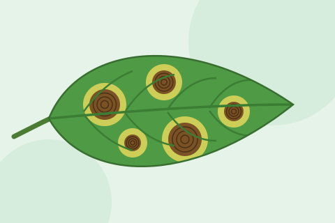
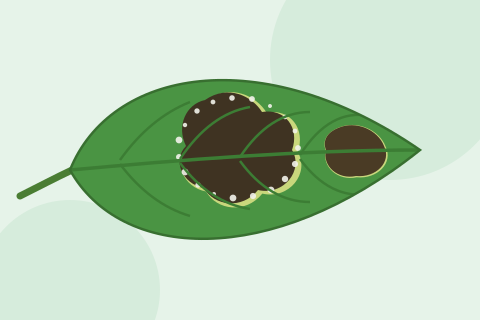

Tomato Leaf Curl Virus Disease
Small, crumpled leaves curling upward with yellow edges; plants stunted and bushy, few fruits.
Overview
Tomato leaf curl is a group of virus diseases carried from plant to plant by the whitefly. Several of these viruses, including Tomato leaf curl New Delhi virus, are present in Pakistan and also infect other crops and weeds.
An infected plant cannot be cured. Plants infected while young stay small and bushy and set very few fruits, so losses can be very high. The disease is worst in crops grown in hot months when whitefly numbers are high, so protecting the nursery and young plants from whiteflies is the key.
Symptoms
- Young leaves become small, crumpled and curl upward or cup
- Yellowing along the leaf edges and between the veins
- Short gaps between leaves, so the plant looks stunted, upright and bushy
- Flowers drop off before setting fruit
- Very few and small fruits, especially on plants infected early
- Tiny white flies under the leaves that fly up when the plant is shaken
Causes & Spread
Main cause: Whitefly-borne begomoviruses, e.g. Tomato leaf curl New Delhi virus (ToLCNDV) and Tomato yellow leaf curl virus (TYLCV), carried by Bemisia tabaci.
How it spreads and what makes it worse
- Whiteflies feed on infected plants and carry the virus to healthy ones
- Infected nursery seedlings carry it to new fields; symptoms can take up to about three weeks to show
- Old, infected tomato crops and weeds near new plantings act as virus sources
- Hot, dry weather with large whitefly populations
- It is not spread by touching plants or through soil
What to Do
- Look under the leaves for whiteflies and check how many plants show curling
- Pull out and bury or burn infected plants while there are only a few, putting a bag over them first so whiteflies do not fly off
- Put up yellow sticky traps to catch and monitor whiteflies
- Remove weeds in and around the field
- Ask your agriculture officer about whitefly control that is approved in your area
Don't
- Do not plant new tomatoes next to an old infected crop
- Do not leave old tomato plants standing after the last picking
When to call an expert: Contact your agriculture officer if leaf curl appears in the nursery or on young plants, or if whitefly numbers are rising fast. They can confirm the virus and advise on resistant varieties.
Prevention
- Grow leaf-curl-tolerant or resistant varieties recommended for your area
- Raise nursery under fine insect-proof net so seedlings stay free of whiteflies
- Transplant only healthy seedlings with no curling
- Keep new fields away from older tomato, cotton and other whitefly-heavy crops
- Keep the field and borders free of weeds
- Destroy crop remains soon after the last harvest
Problems That Look Similar
Herbicide drift damage
Twisted, strap-like or cupped leaves appear on many plants at once, often on one side of the field, without whiteflies or yellow edges.
Mite or thrips damage
Leaves curl down with bronze, silvery or rough undersides; look for tiny mites or thrips.
A related whitefly-borne virus on cotton with thick dark veins and small leaf-like growths under the leaf.
Sources
This guide is for general information only and is not a diagnosis. We never recommend medicine doses. Always follow the advice of your local agriculture officer. Last updated: October 2026.
Keep learning
Related Diseases

Late Blight
Large dark, wet-looking patches that spread very fast in cool, wet weather.
View details
Blossom End Rot
A dark, sunken, leathery patch at the bottom (flower end) of tomato, chilli or gourd fruits.
View details